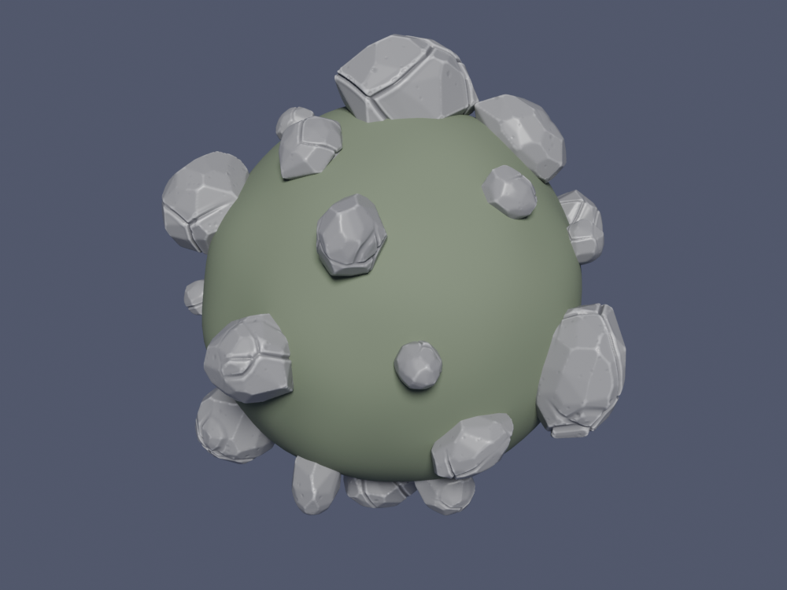
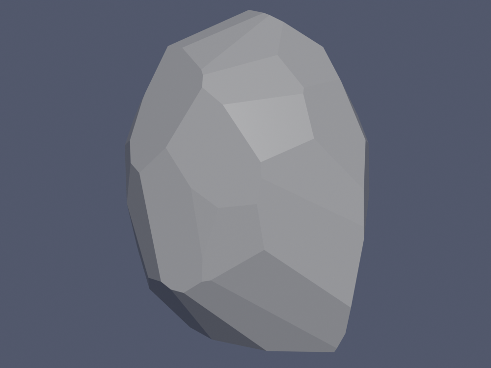
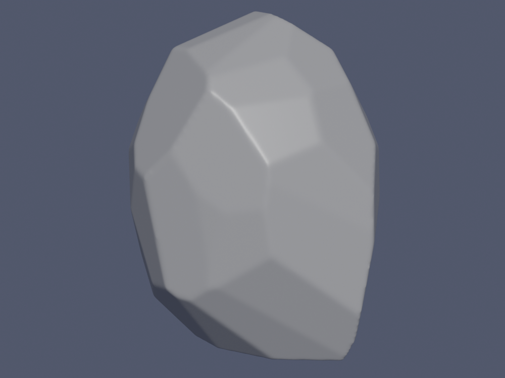
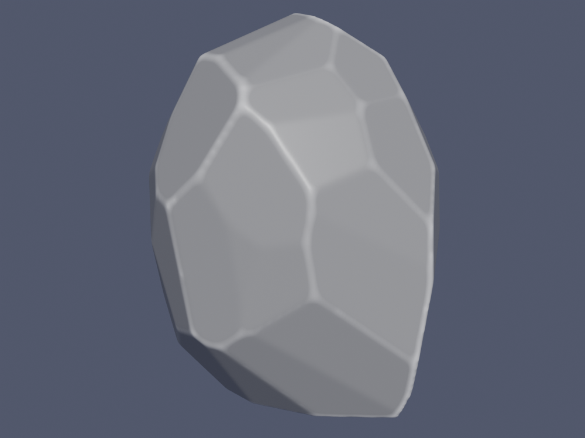
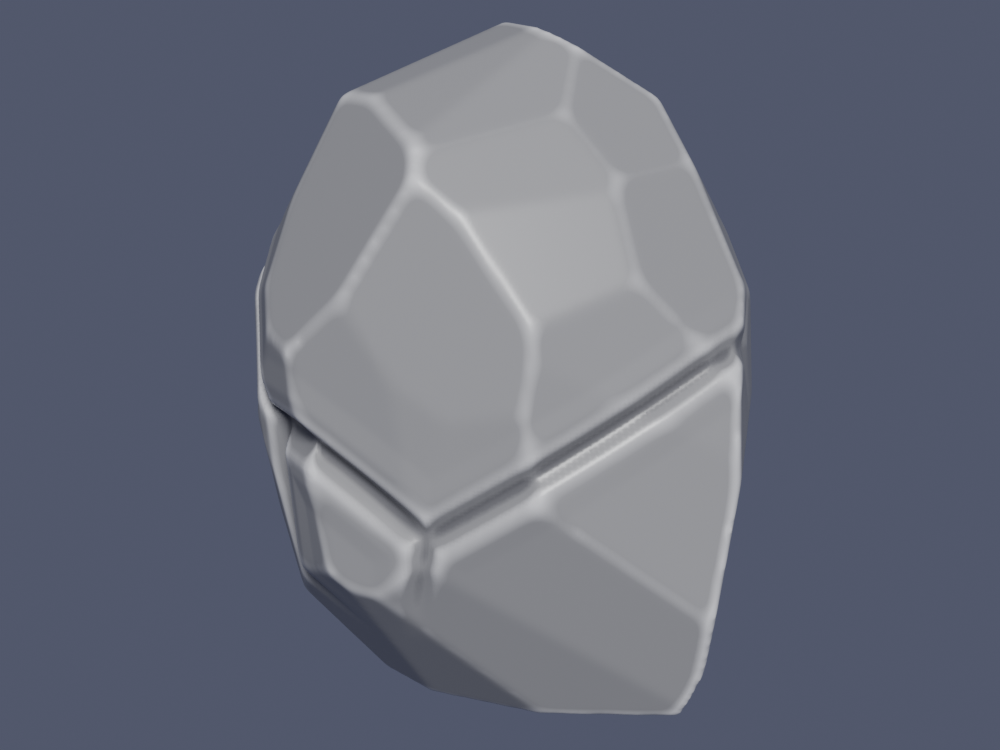
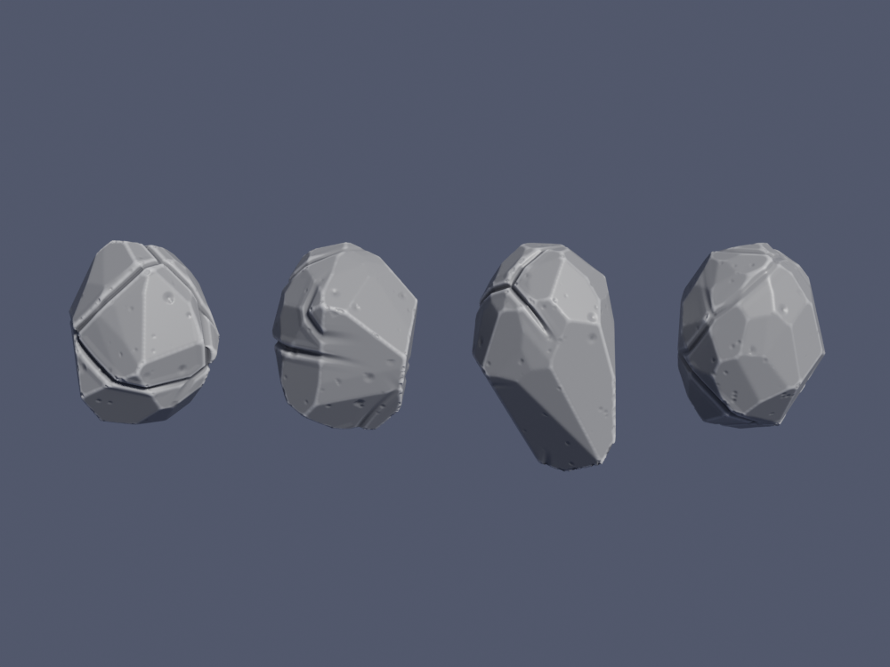

A rock as a sculptor blocks it out for a stylized game: flat facets, soft bright edges, a few cracks, a few pits. Here nobody sculpts it: a graph makes it, and a seed makes another one. The tutorial ends as a generator: a mini planet of rocks, no two alike.

You need Blender 5 and the Base Node add-on, version 0.12.1 or later. Steps 1 and 2 use the free standard library alone. From step 3 on you need the Smart Materials pack: it carries the three modules that give the rock its look (mesh_maps, generators, mesh_effects). The steps below are free; those modules are not.
| Module | Tier | What it gives here |
|---|---|---|
math | free | fibonacci_point and random_direction: where the facets go. |
mesh_maps | pack | The curvature of the mesh, computed live and stored on it: where its edges and its hollows are. |
generators | pack | curvature_mask: that curvature as two masks for the material, edges and cavities. |
mesh_effects | pack | dents and chip_edges: pits and chips made in the mesh, stored for the material. |
Every block below is a complete .bn file, its code beside the nodes it builds. Two ways to try a step:
stylized_rock at the 3D cursor. A click on the file icon downloads the file instead.
The pictures are rendered from these exact files by render.py.
Four things, in the order a sculptor does them:
The first three are geometry, the last is the material, and the material reads what the geometry stored: that is what the pack is for.
A facet is a plane that touches a sphere. Take 50 points on the unit sphere, cut along the plane tangent at each: what is left is a convex block of 50 flat facets. Geometry Nodes has no node that cuts by planes, but it has the two that give the same block:
step1_block.bn: rock_block, stylized_rock
fibonacci_point spreads the points evenly, random_direction pushes each one about: jitter 0 gives facets of one size, 1 large ones beside slivers. ConvexHull joins the points in triangles.n, at n / (n ⋅ Position()). DualMesh turns the hull inside out, a point a triangle and a face a point: its faces are the facets.1 + z * taper is a perspective: the top shrinks, the bottom grows, and a plane stays a plane. Then size scales it.
Try: facets at 12, then 200; jitter at 0; taper at 0 and 0.6.
Fifty faces cannot carry a crack. A sculptor remeshes: the same shape, made of small even faces. MeshToSDFGrid then GridToMesh do it, voxel wide. A few passes of BlurAttribute on the positions then round the edges, and only them: a flat face stays where it is.
step2_clay.bn: clay, stylized_rock
voxel is the size of the finest detail to come: 6 mm on a rock 1 m tall, about 100 000 faces, two seconds to build.soften is the width of the rounded edge, in passes: each one reaches a voxel further.
The pale edge is what makes a stylized rock read. A material cannot find the edges of a mesh by itself; the mesh can. One line at the end of the pipe, |> mesh_maps(…), stores its curvature, and curvature_mask gives it to the material as two masks:
step3_edges.bn: rock_stone, stylized_rock
m.mask is 1 on what sticks out; Mix lays light over stone there.m.cavities is 1 in what goes in; Mix lays dark over the layer before. Nothing is hollow yet: the next steps dig.radius: 0.012 is the width the curvature is measured over, in metres: the width of the pale line. strength is its contrast.mesh_maps stays the last line before the material in every step to come: it measures the mesh as it is when it gets it.
A crack is a line across the rock, pushed in. The lines come from a Voronoi texture: the walls between its cells are planes, and where a plane crosses the rock it draws a line all around it, with forks where three cells meet. Three changes make cracks of them:
step4_cracks.bn: cracks, rock_stone, stylized_rock
bend far: the planes bend, the cracks curve. DISTANCE_TO_EDGE is the distance to the nearest wall.amount 0 for none, 1 for cracks all around.x is 0 in the middle of the crack and 1 at its border. The groove is a smooth step of it, pushed in along the normal; a low lip rises just past the border, as clay does under a knife.
cracks stores how deep it cut as rock_crack, and the material darkens the hollows by it. The lips are edges: mesh_maps, after it in the pipe, finds them, and they turn pale with no line more.

Try: spacing at 0.4 for a rock in pieces; bend at 0 for straight cuts; amount at 1.
Three lines of the pack finish the rock: two passes of dents, large and small, and chip_edges, which knocks bits off the edges. They are subtle on purpose: a pit deeper than a centimetre reads as a hole, not as stone.
step5_wear.bn: stylized_rock, rock_stone
mesh_maps last: the maps see the cracks, the pits and the chips.e = mesh_effects_read() gives the material what the effects stored: e.dent darkens a pit a little, e.chip lights a chip.stylized_rock gives its seed to the block, the cracks, the pits and the chips: one number, one rock.
Seed on the modifier.
One graph, one seed, one rock: it is a generator. To cover a ground with rocks that differ, instancing is no help: instances are copies of one geometry. A foreach zone runs its body once a point, with that point's values: each turn builds a rock of its own.
step6_planet.bn: rock_planet, stylized_rock
IcoSphere with low hills, and points on it by Poisson disk, spacing apart: no two rocks in the same place.up and its index i. seed + i is the seed of its rock; two random vectors give its proportions, its size and its turn.AlignRotationToVector points the rock's top along the normal of the ground; RotateRotation, in LOCAL space, then leans it and turns it about that normal. It is sunk a third into the ground.stylized_rock takes two inputs more here: size, and voxel, divided by the rock's scale: once scaled, every rock has faces of the same size, and a small rock fewer of them.voxel while you tune, lower it to render.seed for the planet, seed + i for each of its rocks.Try: change seed: another planet. spacing at 0.6 crowds it. Replace the IcoSphere with a Grid, or with your own terrain: the rest stays as it is.
| Where | Input | What it does |
|---|---|---|
rock_block | facets, jitter | How many facets, and how unequal. |
rock_block | size, taper | The proportions of the rock, and how much narrower its top is. |
clay | voxel, soften | The size of the faces, and how round the edges are. |
cracks | spacing, amount, bend | How many cracks, how much of them is open, how curved. |
cracks | width, depth | The section of a crack. |
dents | size, depth, density | The pits: how wide, how deep, how many. |
mesh_maps | radius, strength | The width and the contrast of the pale edges. |
rock_stone | stone, light, dark | The three colours, on the group node in the material: red clay is (0.36, 0.06, 0.035). |
The planet, in one file. Drag the card onto empty space in Blender's 3D Viewport and keep Instantiate the Example: a new object carries rock_planet. A click on the card downloads the file.
The steps before it, to start again from any of them; step 5 is the rock alone:
The files, with the script that renders this page's pictures, are in examples/tutorials/stylized_rock/.